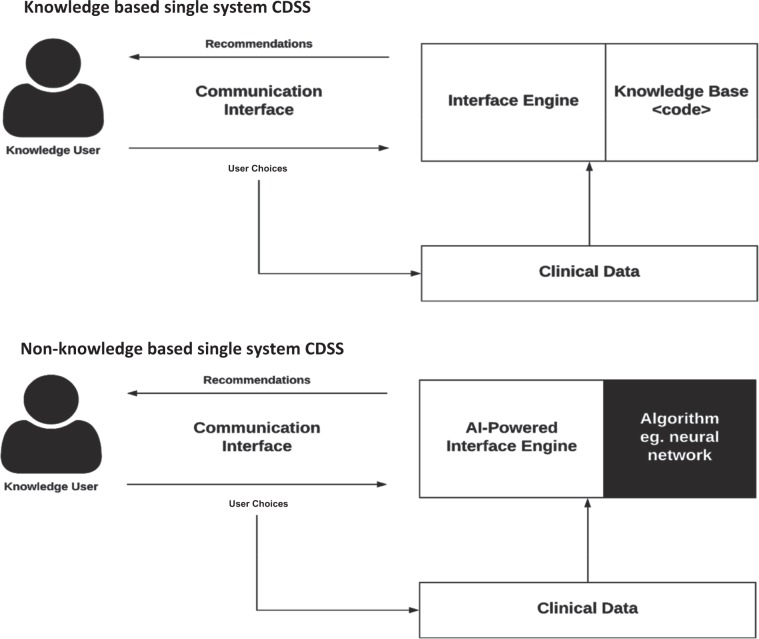

Security Vulnerabilities
EHR systems may be susceptible to hacking or unauthorized access, potentially compromising patient data and privacy.
Understanding various information systems used in healthcare settings, including electronic health records (EHRs), clinical decision support systems (CDSS), and picture archiving and communication systems (PACS).
The integration of information systems in healthcare settings has revolutionized the delivery of medical services, enhancing efficiency, accuracy, and patient outcomes. This essay explores the various types of information systems used in healthcare, including Electronic Health Records (EHR), Clinical Decision Support Systems (CDSS), and Picture Archiving and Communication Systems (PACS). It examines their functionalities, benefits, and the challenges faced during implementation. The discussion highlights how these systems contribute to improved patient care, streamlined administrative processes, and the overall transformation of healthcare practices. Through this exploration, the essay aims to provide a comprehensive understanding of the critical role information systems play in modern healthcare environments.
In today's rapidly evolving healthcare landscape, the integration of advanced information systems has become essential for delivering high-quality medical services. These systems, encompassing a wide range of technologies and applications, are designed to enhance the efficiency, accuracy, and effectiveness of healthcare delivery. Among the most pivotal information systems in healthcare are Electronic Health Records (EHR), Clinical Decision Support Systems (CDSS), and Picture Archiving and Communication Systems (PACS) platforms. Each of these systems plays a crucial role in managing patient data, supporting clinical decisions, and providing remote healthcare services. This website delves into the functionalities and benefits of these information systems, as well as the challenges associated with their implementation.
By examining these aspects, we gain a comprehensive understanding of how information systems are transforming healthcare practices, improving patient outcomes, and streamlining administrative processes. Healthcare information systems are pivotal in modern medical practice, enabling seamless data management, improved patient care, and efficient administrative operations. These systems encompass a variety of technologies and applications designed to collect, store, manage, and transmit healthcare information.
An electronic health record (EHR) is a digital version of a patient’s paper chart. EHRs are real-time, patient-centered records that make information available instantly and securely to authorized users. While an EHR does contain the medical and treatment histories of patients, an EHR system is built to go beyond standard clinical data collected in a provider’s office and can be inclusive of a broader view of a patient’s care.
EHRs are a vital part of health IT and can:
Contain a patient’s medical history, diagnoses, medications, treatment plans, immunization dates, allergies, radiology images, and laboratory and test results
Allow access to evidence-based tools that providers can use to make decisions about a patient’s care
Automate and streamline provider workflow
Patient registration, billing, preventive screenings, or checkups
Patient appointment and scheduling
Tracking patient data over time
Monitoring and improving overall quality of care
EHR systems may be susceptible to hacking or unauthorized access, potentially compromising patient data and privacy.
Technical failures or system malfunctions could lead to data loss or destruction, resulting in the unavailability of critical patient information.
Errors or inaccuracies may occur, affecting the reliability and integrity of the recorded data.
Risk of treatment errors, such as incorrect medication dosages or missed critical information, impacting patient safety.
A clinical decision support system (CDSS) is intended to improve healthcare delivery by enhancing medical decisions with targeted clinical knowledge, patient information, and other health information. A traditional CDSS is comprised of software designed to be a direct aid to clinical-decision making, in which the characteristics of an individual patient are matched to a computerized clinical knowledge base and patient-specific assessments or recommendations are then presented to the clinician for a decision.CDSSs today are primarily used at the point-of-care, for the clinician to combine their knowledge with information or suggestions provided by the CDSS
CDSSs have been classified and subdivided into various categories and types, including intervention timing, and whether they have active or passive delivery. CDSS are frequently classified as knowledge-based or non-knowledge based. In knowledge-based systems, rules (IF-THEN statements) are created, with the system retrieving data to evaluate the rule, and producing an action or output7; Rules can be made using literature-based, practice-based, or patient-directed evidence. CDSS that are non-knowledge based still require a data source, but the decision leverages artificial intelligence (AI), machine learning (ML), or statistical pattern recognition, rather than being programmed to follow expert medical knowledge.Non-knowledge based CDSS, although a rapidly growing use case for AI in medicine, are rife with challenges including problems understanding the logic that AI uses to produce recommendations (black boxes), and problems with data availability.They have yet to reach widespread implementation. Both types of CDSS have common components with subtle differences, illustrated below:
Can disrupt clinician workflow, especially in the case of stand-alone systems. CDSS also disrupt workflow if designed without human information processing and behaviours in mind.
Disruptive alerts should be limited to more life-threatening or consequential contraindications.
Lack of technological proficiency can be hindering when engaging with a CDSS.
Maintenance of CDSS is an important but often neglected part of the CDSS life-cycle.
There is a reluctance or perceived risk associated with transporting sensitive patient information.
Up to 74% of those with a CDSS said that financial viability remains a struggle. Outset costs to set up and integrate new systems can be substantial
Picture archiving and communication system (PACS) is a modality of imaging technology which helps in image transmission from the site of image acquisition to multiple physically-disparate locations. This technology not only is economical (film-less department), but also convenient to access multiple modalities (radiographs, CT, MR, ultrasound etc.) simultaneously at multiple locations within hospitals or across the globe.
The major components in the PACS workflow domain include acquisition; transfer to a central repository, with appropriate archiving; remote access for viewing; reporting; support in clinical decision-making (as with surgical planning); billing; and accounting; etc. All these components have to be supported by a robust and secure network, which is the backbone of the PACS.
PACS is usually an integration of:
Input from digital or digitized analog devices, which may be any radiological modality e.g. x-ray, CT, MRI or ultrasound
Image acquisition device
Image storage device/server for short or long-term storage of data
Transmission network: local area network (within a building, office, department or campus) or wide area network (across a geographical area or around the world)
Display stations: imaging workstation and user interface
Camera: to convert into hard-copy images on need basis
Integration with radiology information system (RIS) and hospital information system (HIS)
Potential for cost overruns. Building and maintaining a PACS system in-house requires significant financial investments in hardware, software development, and ongoing support.
Specialized expertise in medical imaging, compliance, and cybersecurity is required. Healthcare may lack the necessary knowledge to build a robust, standards-compliant, and secure system.
Interoperability is vital, but integrating a custom PACS system with existing EHR or clinical systems can be complex, leading to compatibility issues and data silos.
Evolving technology and standards pose challenges for homegrown PACS systems in keeping up with imaging advancements, regulations, and cybersecurity, adding complexity and risks for institutions.
Limited scalability in homegrown PACS systems can hinder efficient patient care as healthcare organizations expand, leading to performance issues and frequent system upgrades.
Commercial PACS solutions provide reliable support, adhere to standards, and ensure data integrity and patient safety. Homegrown systems lack support, face evolving standards, and pose risks.
Healthcare informatics utilizes technology to improve patient care and streamline data management. Understanding these technologies is crucial for optimizing healthcare and ensuring patient safety.
EHR
CDSS
PACS
Digital storage of patient records, including medical history, treatments, and test results.
Improved patient care coordination, enhanced data accuracy, reduced paperwork, and easy access to patient data.
Recording patient visits, tracking health trends, sharing data among providers.
Data breaches, system downtime, and the need for extensive training.
Provide clinical knowledge and patient-specific information to aid decision-making.
Improved patient outcomes, reduced medical errors, and evidence-based recommendations.
Alerting to potential issues, providing treatment guidelines, and assisting in diagnosis.
Overreliance on technology, alert fatigue, and integration challenges.
Store, retrieve, manage, and distribute medical images.
Quick access to images, reduced need for physical storage, and improved image management.
Viewing and sharing medical images, integrating with EHRs and RIS.
Data loss, image quality degradation, and cybersecurity threats.
The implementation of healthcare information systems offers numerous benefits, including improved patient safety, enhanced quality of care, and increased operational efficiency. These systems reduce paperwork, minimize errors, and facilitate better communication among healthcare providers. However, their adoption comes with challenges such as high initial costs, the need for extensive training, and concerns about data privacy and security. Ensuring interoperability among different systems and managing the change process within healthcare organizations are also significant hurdles.
Information systems in healthcare are essential for modernizing medical practices and enhancing patient care. EHR, CDSS, and telemedicine platforms represent just a few examples of how technology can transform healthcare delivery. Despite the challenges associated with their implementation, the benefits they provide in terms of improved patient outcomes, operational efficiency, and overall quality of care are undeniable. As technology continues to advance, the role of these systems in healthcare will only become more integral, paving the way for a more connected, efficient, and patient-centric healthcare system.